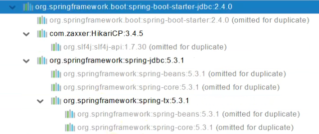
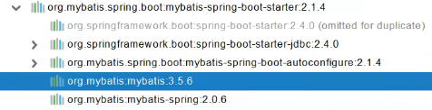

SpringBoot 数据访问-SQL
1.数据源的自动配置 - HikariDataSource
1.1. 导入JDBC场景
1
2
3
4
5
| <dependency>
<groupId>org.springframework.boot</groupId>
<artifactId>spring-boot-starter-data-jdbc</artifactId>
</dependency>
|

HikariCP: 数据库连接池
spring-jdbc: 进行jdbc操作的
spring-tx: spring支持事务的
再导入数据库驱动：
1
2
3
4
5
6
7
8
9
10
11
12
13
| 默认版本：<mysql.version>8.0.22</mysql.version>
<dependency>
<groupId>mysql</groupId>
<artifactId>mysql-connector-java</artifactId>
</dependency>
想要修改版本
1、直接依赖引入具体版本（maven的就近依赖原则）
2、重新声明版本（maven的属性的就近优先原则）
<properties>
<java.version>1.8</java.version>
<mysql.version>5.1.49</mysql.version>
</properties>
|
1.2. 分析自动配置
自动配置的类：
DataSourceAutoConfiguration：数据源的自动配置
- 修改数据源相关的配置：spring.datasource
- 数据库连接池的配置，是容器中没有DataSource才自动配置的
- 底层配置好的连接池是 HikariDataSource
DataSourceTransactionManagerAutoConfiguration：事务管理器的自动配置
JdbcTemplateAutoConfiguration：JdbcTemplate的自动配置，可以用来对数据库进行CRUD
- 可以修改@ConfigurationProperties(prefix = “spring.jdbc”)这个配置项来修改JdbcTemplate
JndiDataSourceAutoConfiguration：jndi的自动配置
XADataSourceAutoConfiguration：分布式事务相关的
1.3. 修改配置项
1
2
3
4
5
6
| spring:
datasource:
url: jdbc:mysql:///db_account
username: root
password: 123456
driver-class-name: com.mysql.jdbc.Driver
|
1.4. 测试
1
2
3
4
5
6
7
8
9
10
11
12
13
14
15
16
17
18
| @Slf4j
@SpringBootTest
class Boot05WebAdminApplicationTests {
@Autowired
JdbcTemplate jdbcTemplate;
@Test
void contextLoads() {
Long aLong = jdbcTemplate.queryForObject("select count(*) from account_tbl", Long.class);
log.info("记录总数：{}",aLong);
}
}
|
2.使用Druid数据源
2.1. 引入druid-starter
1
2
3
4
5
| <dependency>
<groupId>com.alibaba</groupId>
<artifactId>druid-spring-boot-starter</artifactId>
<version>1.1.17</version>
</dependency>
|
2.2. 分析自动配置
- 配置绑定：spring.datasource.druid
- DruidSpringAopConfiguration.class：监控SpringBean的，配置项：spring.datasource.druid.aop-patterns
- DruidStatViewServletConfiguration.class：监控页的功能，配置项：spring.datasource.druid.stat-view-servlet；默认开启
- DruidWebStatFilterConfiguration.class：web监控。配置项：spring.datasource.druid.web-stat-filter；默认开启
- DruidFilterConfiguration.class：所有Druid自己filter的配置：
1
2
3
4
5
6
7
8
| private static final String FILTER_STAT_PREFIX = "spring.datasource.druid.filter.stat";
private static final String FILTER_CONFIG_PREFIX = "spring.datasource.druid.filter.config";
private static final String FILTER_ENCODING_PREFIX = "spring.datasource.druid.filter.encoding";
private static final String FILTER_SLF4J_PREFIX = "spring.datasource.druid.filter.slf4j";
private static final String FILTER_LOG4J_PREFIX = "spring.datasource.druid.filter.log4j";
private static final String FILTER_LOG4J2_PREFIX = "spring.datasource.druid.filter.log4j2";
private static final String FILTER_COMMONS_LOG_PREFIX = "spring.datasource.druid.filter.commons-log";
private static final String FILTER_WALL_PREFIX = "spring.datasource.druid.filter.wall";
|
2.3. 配置示例
1
2
3
4
5
6
7
8
9
10
11
12
13
14
15
16
17
18
19
20
21
22
23
24
25
26
27
28
29
30
31
32
33
| spring:
datasource:
url: jdbc:mysql://localhost:3306/db_account
username: root
password: 123456
driver-class-name: com.mysql.jdbc.Driver
druid:
aop-patterns: com.atguigu.admin.*
filters: stat,wall
stat-view-servlet:
enabled: true
login-username: admin
login-password: admin
resetEnable: false
web-stat-filter:
enabled: true
urlPattern: /*
exclusions: '*.js,*.gif,*.jpg,*.png,*.css,*.ico,/druid/*'
filter:
stat:
slow-sql-millis: 1000
logSlowSql: true
enabled: true
wall:
enabled: true
config:
drop-table-allow: false
|
3.整合MyBatis操作
starter
1
2
3
4
5
| <dependency>
<groupId>org.mybatis.spring.boot</groupId>
<artifactId>mybatis-spring-boot-starter</artifactId>
<version>2.1.4</version>
</dependency>
|

3.1. 配置模式
- 全局配置文件
- SqlSessionFactory：自动配置好了
- SqlSession：自动配置了SqlSessionTemplate，里面整合了SqlSession
- @Import(AutoConfiguredMapperScannerRegistrar.class);
- Mapper：只要我们写的操作MyBatis的接口标注了@Mapper，就会被自动扫描进来
1
2
3
4
5
6
| @EnableConfigurationProperties(MybatisProperties.class)
@AutoConfigureAfter({ DataSourceAutoConfiguration.class, MybatisLanguageDriverAutoConfiguration.class })
public class MybatisAutoConfiguration{}
@ConfigurationProperties(prefix = "mybatis")
public class MybatisProperties
|
通过修改配置文件中 mybatis为前缀的参数修改配置
1
2
3
4
5
6
7
8
9
10
11
12
13
14
15
16
|
mybatis:
config-location: classpath:mybatis/mybatis-config.xml
mapper-locations: classpath:mybatis/mapper/*.xml
Mapper接口--->绑定Xml
<?xml version="1.0" encoding="UTF-8" ?>
<!DOCTYPE mapper
PUBLIC "-//mybatis.org//DTD Mapper 3.0//EN"
"http://mybatis.org/dtd/mybatis-3-mapper.dtd">
<mapper namespace="com.ye.admin.mapper.AccountMapper">
<!-- public Account getAcct(Long id); -->
<select id="getAcct" resultType="com.ye.admin.bean.Account">
select * from account_tbl where id=#{id}
</select>
</mapper>
|
配置private Configuration configuration; mybatis.configuration就相当于修改mybatis全局配置文件下的值
1
2
3
4
5
6
7
8
|
mybatis:
mapper-locations: classpath:mybatis/mapper/*.xml
configuration:
map-underscore-to-camel-case: true
全局配置文件和mybatis:configuration冲突，只能写一个
可以不写全局配置文件，所有全局配置文件的配置都放在configuration配置项中即可
|
步骤总结：
- 导入myBatis官方starter
- 编写mapper接口，标注@Mapper注解
- 编写sql映射文件并绑定mapper接口
- 在application.yaml中指定Mapper配置文件的位置，以及指定全局配置文件的信息（但是建议用mybatis.configuration配置）
4.整合MyBatis-Plus完成CRUD
4.1 MyBatis-Plus
MyBatis-Plus (MP)是MyBatis的增强工具，在MyBatis的基础上制作增强不做改变。
官网：https://baomidou.com/
（安装MyBatisX插件）
4.2 整合MyBatis-Plus
1
2
3
4
5
| <dependency>
<groupId>com.baomidou</groupId>
<artifactId>mybatis-plus-boot-starter</artifactId>
<version>3.4.1</version>
</dependency>
|
自动配置
- MyBatisPlusAutoConfiguration配置类，MyBatisPlusProperties配置项绑定。mybatis-plus:xxx就是对mybatis-plus的定制
- SqlSessionFactory自动配置好。底层是容器中默认的数据源。
- mapperLocations自动配置好，有默认值：classpath※:/mapper/※※/※.xml;即任意包的类路径下的所有mapper文件夹下任意路径下的所有xml都是sql映射文件。建议以后sql映射文件放在mapper下。
- 容器中自动配置好了SqlSessionTemplate。
- @Mapper标注的接口也会被自动扫描。建议@MapperScan(“com.ye.admin.mapper”)批量扫描。
优点：
只要Mapper继承了BaseMapper接口就可以进行CRUD